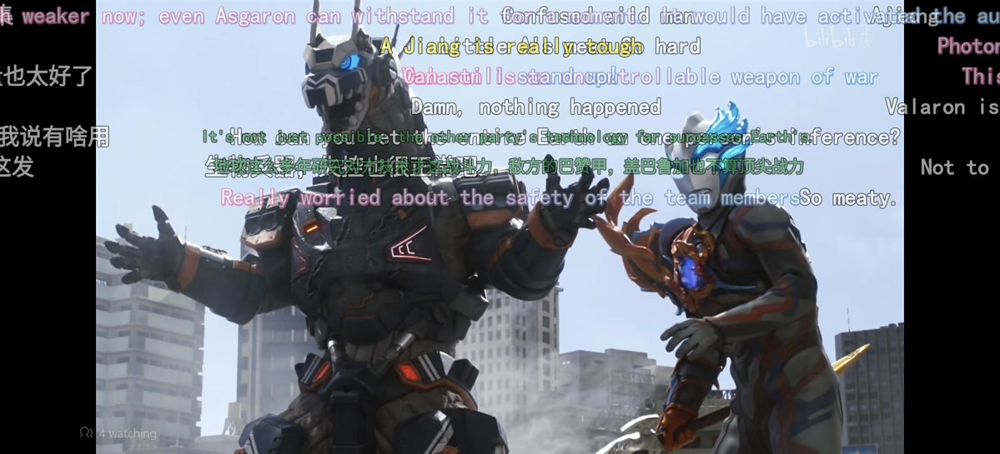
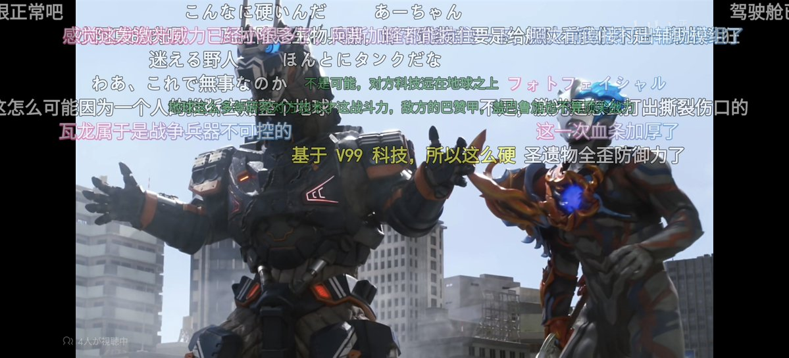

秋分与猫🍔 鲜虾🦐鱼板🍥面🍜
@AsdQWD358224
RT @NEXTNEVER1: bilibiliグローバル版に中国内地のネットワークで接続したら、ウルトラマンなど中国内地で正規配信されているアニメや特撮を見れることに気づいたでござるッ！
もちろん弾幕に翻訳が適用されている
最終的にはYouTubeと同様にほとんどの動画の声も…


NEXTNEVER1
@NEXTNEVER1
bilibiliグローバル版に中国内地のネットワークで接続したら、ウルトラマンなど中国内地で正規配信されているアニメや特撮を見れることに気づいたでござるッ！
もちろん弾幕に翻訳が適用されている
最終的にはYouTubeと同様にほとんどの動画の声も音声で翻訳される
bilibili突入新時代…ッ！
When I https://t.co/poYM9jCiql